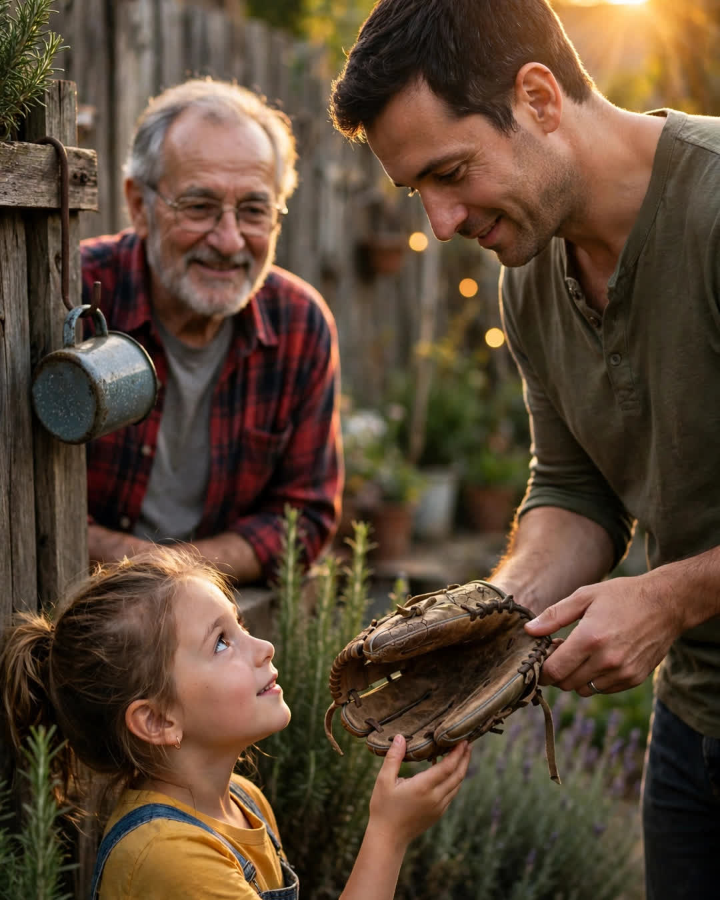

The Catch
A Clipp Kaili original story

There is a baseball glove in our garage that has been re-laced eleven times, and nobody in this family is allowed to throw it away.
My father bought it the summer I turned nine. We were not a money family. Dad worked at the feed plant, and extras came slow, but one June evening he came home with that glove under his arm like it was a newborn. Not new — somebody's castoff, the leather cracked at the thumb — but he had spent two nights oiling it at the kitchen table until it shone.
"Your hands are small now," he said. "They won't be. The glove waits."
Every evening that summer, after supper, we went out to the backyard. Not to practice, exactly. Dad would stand by the fence with his coffee going cold in his other hand, and throw. Underhand at first. Then easy overhand. Then, the year I turned twelve, the real thing — fastballs that stung my palm through the cracked leather, while he called out the same words, in the same order, every single night.
"Glove down. Eyes up. Don't be afraid of it. It only hurts if you flinch."
I asked him once what that had to do with baseball. He shrugged. "Nothing, probably. Works for the rest of it, too."
He was right. Glove down, eyes up got me through my first job rejection, through the letter that said no from the college I wanted, through standing in a hospital hallway at twenty-six waiting on news about him. I did not flinch. He had trained the flinch out of me one summer evening at a time.
When my son turned nine, I brought the glove down from the garage shelf. Dad's hands were too stiff by then — the plant years had gotten into his knuckles — but he came out to the yard anyway and sat in the lawn chair with his coffee, calling the words while I threw.
"Glove down. Eyes up. Don't be afraid of it."
Last month, my daughter asked for a turn.
She is nine. She is small for it, the way I was, the way my son was. Her brother held the gate. My father's chair sat empty by the fence — two summers now — but his coffee mug still hangs on the nail where he left it, because that is one more thing nobody in this family is allowed to move.
My son threw the first ball, easy and underhand. My daughter caught it clean, turned the glove over in her hands like it was a question, and looked up at me.
"Grandpa really caught with this? When he was old?"
"He caught with it when I was your size," I said. "It was already old then."
She thought about that. Then she set her feet the way he'd taught me, the way I'd taught her brother, and called out — in his order, in his rhythm, like a prayer she had only ever overheard:
"Glove down. Eyes up. Don't be afraid of it."
Some fathers leave their children houses. Some leave them money, or land, or a name to live up to.
Mine left eleven re-lacings, one cracked glove, and four words for meeting anything life throws hard.
It only hurts if you flinch.
← Back to all stories